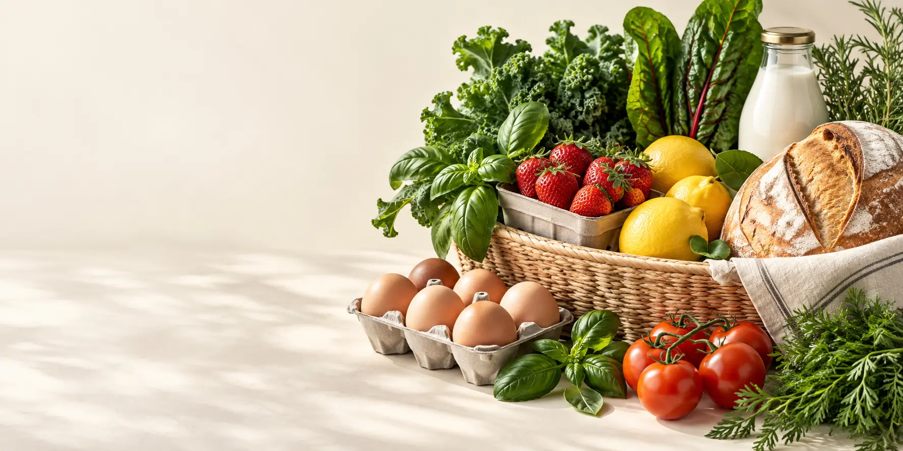

PERSONAL WEB PROJECTS · 2026
把想法做成
可以打开的页面。
这里收录我设计和开发的 HTML 页面作品。每个项目都能直接浏览，免费体验；新的创意，也会持续在这里更新。
探索作品 由 I IKUN2004 设计与开发
SELECTED WORK / 01
精选作品
从视觉到交互，认真打磨每一个细节。

FEATURED PROJECT拾鲜集 Fresh Daily Market
一套完整的多页面超市购物体验。从商品浏览、搜索筛选，到购物车、收藏、结算和订单，每一步都可以亲自体验。
进入项目ABOUT THE CREATOR你好，我是
你好，我是
I IKUN2004。
喜欢把日常中的想法，做成真正能使用和体验的页面。这个作品集会持续收录新的 HTML 项目，欢迎来逛，也欢迎分享给朋友。
01 已发布项目09 页面体验∞ 更多灵感